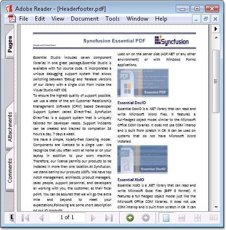

Headers and footers can be placed in the pages of your PDF document.
Follow the below procedure to place a header:
1. Create a template object for the header. PdfPageTemplateElement class can be used for creating a template object.
2. Assign the created template header to PDF document header.
The same procedure can be followed to create a footer. Page numbers on the footer of a document are set by using automatic fields.
You can dock the header or footer to any position.
The following code example illustrates how to create a Header and Footer.
|
[C#]
//Create a header and draw the image. RectangleF rect = new RectangleF(0, 0, doc.Pages[0].GetClientSize().Width, 50); PdfPageTemplateElement header = new PdfPageTemplateElement(rect); PdfImage img = new PdfBitmap(@"..\..\Data\logo.png");
//Draw the image in the Header. header.Graphics.DrawImage(img, imageLocation, imageSize);
//Add the header at the top doc.Template.Top = header;
// Footer. // Create a Template that can be used as a footer. //Create a page template PdfPageTemplateElement footer = new PdfPageTemplateElement(rect);
//Create page number field PdfPageNumberField pageNumber = new PdfPageNumberField(font, brush);
//Create page count field PdfPageCountField count = new PdfPageCountField(font, brush);
//Add the fields in composite fields PdfCompositeField compositeField = new PdfCompositeField(font, brush, "Page {0} of {1}", pageNumber, count); compositeField.Bounds = footer.Bounds;
//Draw the composite field in footer compositeField.Draw(footer.Graphics, new PointF(470, 40));
//Add the footer template at the bottom doc.Template.Bottom = footer; |
|
[VB.NET]
'Create a header and draw the image. Dim rect As RectangleF = New RectangleF(0, 0, doc.Pages(0).GetClientSize().Width, 50) Dim header As PdfPageTemplateElement = New PdfPageTemplateElement(rect) Dim img As PdfImage = New PdfBitmap("..\..\Data\logo.png")
'Draw the image in the Header. header.Graphics.DrawImage(img, imageLocation, imageSize)
'Add the header at the top doc.Template.Top = header
' Footer. ' Create a Template that can be used as a footer. 'Create a page template Dim footer As PdfPageTemplateElement = New PdfPageTemplateElement(rect)
'Create page number field Dim pageNumber As PdfPageNumberField = New PdfPageNumberField(font, brush)
'Create page count field Dim count As PdfPageCountField = New PdfPageCountField(font, brush)
'Add the fields in composite fields Dim compositeField As PdfCompositeField = New PdfCompositeField(font, brush, "Page {0} of {1}", pageNumber, count) compositeField.Bounds = footer.Bounds
'Draw the composite field in footer compositeField.Draw(footer.Graphics, New PointF(470, 40))
'Add the footer template at the bottom doc.Template.Bottom = footer |

Figure 55: Header and Footer in PDF page